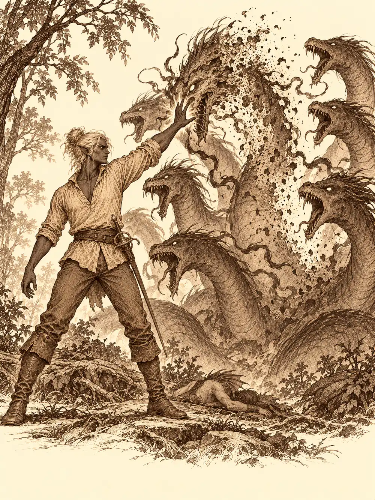

Capítulo 118
Isla Espejismo
Libro VII · La Reina Cuervo
Calista estaba escribiendo una carta al hombre que había construido los portales, porque el arco de piedra de la base seguía muerto y ella no sabía arreglarlo, cuando Kurobane asomó la cabeza por la puerta.
"Necesito vuestra ayuda. Bueno, no yo exactamente".
Guxi había terminado el barco. Iba a usarlo para buscar a su antiguo maestro, aclarar por qué lo habían despedido y, si había suerte, traer a alguien que supiera cómo sacar a Kuroto de la crisis. Calista dejó la pluma: había prometido ayudarlo y se le había olvidado por completo. Gur se apuntó en cuanto oyó la palabra pescar. Erk, la arquera alada, también. Gelbreak también iba, y por el camino contó que llevaba días buscando información sobre el monasterio de Kurobane y sobre la orden a la que pertenecía, por un trato al que habían llegado los dos. En qué consistía ese trato, no lo dijo. El ninja, por su parte, había dejado la Biblia bien escondida en su refugio del sur.
En el puerto los esperaba una nave como no se había visto otra en Kuroto: un casco de metal remachado, una caldera que soltaba vapor, cañones en la borda y un pequeño constructo de latón sujetando el timón. Guxi estaba soldando un último remate y casi no los vio llegar. Desplegó una pasarela que se estiraba sola para que subieran sin mojarse.
Alguien comentó que una cosa de metal así no debería ni flotar. Gelbreak le preguntó a Gur, en voz baja, si no le parecería divertido desintegrar el barco antes de zarpar, solo por ver la cara que ponía Guxi. Gur preguntó entonces dónde iban a pescar. El drow señaló el mar.
El barco era rápido, demasiado rápido para algunos estómagos. Kurobane vomitó por la borda con una elegancia que nadie habría creído posible: plegó en el aire su bufanda manchada con una sola mano y la dejó en el suelo sin que cayera una gota fuera de sitio. Gelbreak se puso verde. Guxi le ofreció una de sus pastillas blancas para el mareo, el drow la chupó para adivinar de qué plantas estaba hecha, no lo consiguió, y al rato se encontró mejor.
Calista ayudó al ninja a entrar en el camarote. Él le cogió la mano.
"Tenemos que hablar. Quizá aquí no es el mejor sitio".
Ella le miró el brazo cubierto por la capa y dijo que más tarde.
Gur, mientras tanto, había descubierto que un barco de metal era un parque de juegos. Ayudó a Erk a meterse dentro de un cañón para ver si cabía, y cabía. Luego encontró la mecha. La arquera salió disparada por encima del agua, gritando, y se estrelló contra las olas a buena distancia. Guxi le lanzó un salvavidas y los demás la sacaron, empapada y furiosa. Más tarde Gur vio girar la gran rueda de paletas del costado, la miró como un gato mira un ovillo y se subió a correr dentro de ella como en una jaula de hámster. Guxi frenó para corregir el rumbo. Gur salió despedido por la borda, y fue Calista quien bajó a ayudarlo a subir.
Hubo daño, magulladuras y retraso. Nadie se perdió.
Al caer la tarde Guxi paró las máquinas para pescar la cena. Calista le enseñó a Gur cómo se usaba una caña, con el gusano en el anzuelo y la paciencia de esperar, y a Gur le pareció un sistema muy aburrido. Ella le prometió que le enseñaría a pescar con las manos.
Gur se tiró al agua. Algo enorme lo agarró desde abajo.
Era una criatura de las profundidades, de pesadilla, larga como un barco pequeño, con tentáculos y ojos que no se parecían a nada de este mundo. Erk bajó tras él con el arco. Kurobane se lanzó también y extendió una oscuridad espesa alrededor de la pelea, de modo que lo que pasó allí abajo solo lo vieron a medias. Gur, atrapado, entró en furia, sacó la maza y golpeó a la criatura en la cabeza una y otra vez. Cuando volvió a la superficie traía al monstruo medio muerto, y luego muerto del todo, y entre todos lo subieron a cubierta.
Calista había acabado en el agua entre bromas y forcejeos con Gelbreak, que había intentado tirarla y se había caído con ella. Una vez abajo, se tomó en serio la pesca. Buceó hasta el fondo, donde los carroñeros se esconden entre las rocas, ordenó a un cangrejo que se metiera en su bolsa y el cangrejo obedeció. En la cueva de donde había salido el monstruo encontró algo redondo y blanco que brillaba como una perla. Se lo guardó. Por el camino vio a Kurobane quedándose sin aire y lo empujó hacia la superficie con una corriente de agua.
La perla resultó ser un huevo de aquella criatura.
Gur y Erk asaron parte de la criatura y comieron con ganas. A Gur le sentó fatal. Se pasó buena parte de la noche asomado a la borda, por el otro extremo.
La isla Espejismo apareció entre la niebla al día siguiente. Guxi aminoró la marcha y el barco se detuvo de golpe contra la arena. La vegetación brillaba de un modo extraño, con colores que no estaban del todo quietos. Se oían voces, y cuando uno intentaba escucharlas se le olvidaban enseguida, como un sueño al despertar.
"¿Quién es tu maestro?", preguntó alguien.
"Takashi".
Kurobane le puso la mano en el hombro. "Recuerda lo que intentaste recordar el otro día. Este lugar juega malas pasadas".
Guxi parecía saber adónde iba, aunque no supiera explicar por qué. Siguió un sendero hecho por el hombre hasta una cabaña pequeña, y de la cabaña salió un anciano. Guxi se quedó quieto un instante. Después corrió hacia él y lo abrazó.
Gelbreak no tenía paciencia para reencuentros. Le susurró algo al viejo, algo que sonaba a secreto, y en la mirada del maestro apareció la docilidad de quien cree que el otro sabe lo peor de él. Gur, a su lado, aprovechó para meterse en las cabezas de todos y escuchar lo que pensaban.
El maestro movió la mano y delante de cada uno apareció un plato. La comida favorita de cada cual: un cuenco de grillos para Erk, que metió la cabeza entera; setas de la Infraoscuridad para el drow; un caldo sencillo de fideos para Kurobane; jabalí para Gur, y para Calista un pescado preparado como lo preparaban en su pueblo, que olió con desconfianza antes de probar.
"Esta isla forma parte del mundo de los sueños", dijo el anciano.
Mientras comían, el maestro le contó a Guxi lo que no recordaba.
"Cuando trabajábamos juntos, no eras mi único alumno. Mi sobrino Suiro era el otro. Y uno de tus mejores amigos".
Guxi se llevó las manos a la cabeza como si le doliera por dentro. No podía ser. ¿Cómo lo había olvidado?
Según el maestro, el culto había raptado a Suiro y le había lavado el cerebro. Al no poder acabar con Takashi, uno de los mayores estorbos del culto en aquellos años, había hecho un ritual para que todo el mundo se olvidara de él. Solo en aquella isla perdida había conseguido el anciano conservar el recuerdo, quizá también por la sangre que los unía. Todo lo que pasó entonces, las cuentas falsas, el fraude, había sido obra de Suiro. Había falsificado los papeles con la firma de Guxi.

Sacó unas copias que había hecho en su momento. Calista las estudió con atención y encontró una diferencia pequeña, pero real, entre las firmas. Gelbreak cogió los papeles y se los guardó en la bolsa.
El ritual duraba diez años, explicó el maestro. Por eso había esperado. Si hubiera vuelto antes, tanto él como Guxi habrían podido morir.
Después les ofreció algo más: una piedra que producía comida, como la isla, aunque a menor escala.
Gur vio enseguida la solución. Se la llevaban, alimentaban a la gente y se acababa el hambre. Calista no estaba tan segura.
"Una sola piedra no puede alimentar a toda la isla. Aunque vayamos de pueblo en pueblo, alguno intentará apropiársela. Solo crearemos más problemas".
"Por una vez estoy de acuerdo con la tritón", dijo Gelbreak. "¿Creéis que los nobles os la van a dejar a vosotros?".
"¿Y es mejor dejar que todos se mueran de hambre?".
Calista recordó que los cazadores estaban atados al shogunato por contrato, que no podían decidir por su cuenta qué hacer con algo así. Lo último que necesitaba Kuroto era un levantamiento. Guxi propuso entregarle la piedra a Rua. Nadie acordó cómo repartirla. Lo primero era llevarla y estudiar cómo administrarla.
Del bosque salió alguien riéndose como un loco.
"Ay, tío. Siempre igual, ¿verdad? Y ahora te has traído a un grupo de gente".
Era Suiro. Alguien intentó dejarlo inmóvil con un hechizo y él se lo sacudió de encima. Dijo que su mascota se encargaría de los visitantes, y de pronto la cabaña, Guxi y su maestro desaparecieron. Los cazadores estaban en otro sitio, solos con la comida a medio terminar y con algo que salió de debajo de la tierra.
Era una falsa hidra, una criatura de muchas cabezas que cantaba. Su canción se metía en la memoria y la emborronaba. Quien la miraba no podía apartar la vista, y quien la oía empezaba a olvidar por qué estaba allí. Kurobane la silenció de entrada, y dentro de aquel silencio nadie pudo lanzarle conjuros que necesitaran palabras. Calista animó a Gur con una canción para que aplastara a la bestia, y el medio orco, furioso porque le habían interrumpido el jabalí, le causó heridas enormes.
La criatura desapareció y reapareció detrás de Calista. La atacó una vez, y otra, y otra, y la tritón cayó al suelo casi muerta. Si moría a manos de aquel monstruo, pensaron algunos, ni siquiera la recordarían.
Gelbreak la oyó gritar a su espalda, se giró y le puso encima una mano que brillaba de color morado. La carne de la hidra se pudrió bajo sus dedos y la bestia se desplomó.
Al morir la criatura, los recuerdos volvieron a su sitio como pájaros que regresan al nido. Kurobane se arrodilló junto a Calista y la curó.
Cuando la niebla se aclaró vieron que las torretas de Guxi habían derribado a Suiro y que el maestro lo había atrapado en una telaraña. Estaba inconsciente. Vivo.
Gelbreak se llevó con su magia, en un parpadeo, a Calista, a Gur y a Erk de vuelta a la base. Kurobane se quedó. Quería que el prisionero le contestara muchas preguntas sobre el culto.
Pero algo le estaba pasando. La capa ya no le cubría el brazo, y la oscuridad le subía por él más arriba que nunca. Saltó junto al cautivo y se detuvo de golpe, como si alguien le sujetara la mano. Murmuró que tenía que matar a ese desgraciado, que le habían quitado mucho.
El maestro lo paralizó con una palabra. Le hizo tragar algo y el ninja cayó inconsciente. Fuera lo que fuera, consiguió que Osuray se calmara durante un tiempo: la oscuridad volvió a recogerse en el brazo y sus ojos volvieron a ser rojos. Subieron la piedra y al prisionero al barco, y el maestro, que era un mago poderoso, hizo desaparecer la nave entera con todos dentro para que apareciera en Sho.
De vuelta en el puerto de Sho, Guxi traía a su maestro, a Suiro atado e inconsciente y a Kurobane en brazos. En el embarcadero los esperaba Archi, que le aconsejó reunir todas las pruebas que pudiera.
Guxi y Takashi se presentaron ante Rua, que estaba reunida con varios nobles, con el prisionero a rastras. El maestro contó lo de su sobrino, el rapto, el culto. Pidió permiso para usar un hechizo que obligara a decir la verdad. Rua se lo prohibió y le pidió primero una explicación. Cuando el anciano le tendió sus copias de los documentos, la viuda le hizo notar que estaban en blanco. Suiro había borrado su rastro con magia, insistió Takashi; los originales lo demostrarían. Guxi propuso llamar a Calista y a Gelbreak. Rua desconfió de pruebas preparadas a toro pasado y de que alguien hubiera sacado cuentas del shogunato para llevarlas a una isla. Exigió pruebas que pudiera verificar y los despidió.
Los originales los tenía Gelbreak. Guxi fue a buscarlo a la base y le exigió los papeles. El drow dijo que el maestro se los había dado por su propia voluntad y le preguntó por qué nadie los había reclamado el día anterior. Se insultaron. Guxi sacó su pistola y desplegó sus torretas, y Gelbreak empezó a reunir magia en las manos. Kurobane se metió en medio y le pidió al drow que entregara los documentos, por el bien de Guxi. Gelbreak se negó a resolver nada en esas condiciones.
Guxi bajó el arma y se derrumbó. Lo había perdido todo, dijo, y apuntó la pistola contra sí mismo. Kurobane se la arrancó de las manos antes de que pudiera hacerse daño y se quedó a su lado. Gelbreak los miró con desprecio y se esfumó con Banzo. Los papeles no cambiaron de manos.
El drow y el goliat aparecieron en una taberna de los barrios bajos. Banzo le contó que la mujer de las telarañas había vuelto a entrar en sus sueños para preguntar por él y por Calista, y que quería aprender a mentir mejor. No les dio tiempo a mucho más: unos gnomos reconocieron al drow y uno lo atacó con una daga. Banzo entró en furia. Hubo cuchilladas, un martillazo de un enano, un humano que se quedó sin piernas, y un mediano que les robó la bolsa y el estoque. Banzo lanzó a Gelbreak contra él como un proyectil. El drow lo redujo a polvo con un rayo verde, recuperó sus cosas, dijo que el ladrón había escapado y esparció los restos con el pie.
Kurobane, todavía agotado, se encontró a Calista comprando provisiones en un mercado donde todo escaseaba y costaba el doble. Se sentaron junto al mar. Él le habló del monasterio donde se había criado y le dijo que con ella podía ser él mismo. Luego le confesó que le gustaba.
Calista tardó en contestar. Le enseñó las arañas de sus manos y le habló de un deber y de una maldición que la obligaban a alejar de su peligro a las personas buenas. No podía corresponderle.
Él dejó al descubierto su brazo oscuro. Le contó que en un templo del culto había empuñado un estoque porque alguien a quien no nombró se lo había ordenado, y que desde entonces esa presencia estaba callada. Le acarició la mejilla. Ella dijo que tenía que trabajar.
Kurobane volvió a la ciudad y se dejó olvidada en la arena la botella que había traído. Calista se quedó un momento más mirando el mar.